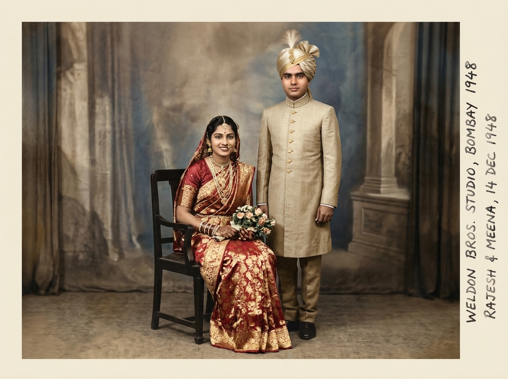

01 / ABRASION
01 / ABRASION
Scratches & Surface Micro-Pits
Removal of hairline emulsion scratches, negative carrier tracks, dust specks, and silvering lines while preserving natural film grain.
Turnaround: 24–48h
From microscopic silver-gelatin fracture repair to hand-sewn Tuscan leather volumes, discover how our conservationists and bookbinders preserve your family’s visual heritage.

ARCHIVAL CERTIFICATION
1200 DPI Optical • 16-Bit Color
Every physical print ages differently depending on climate, paper acidity, and storage. We diagnose and reverse all six primary forms of photographic degradation.
01 / ABRASION
Removal of hairline emulsion scratches, negative carrier tracks, dust specks, and silvering lines while preserving natural film grain.
 02 / STRUCTURAL TEARS
02 / STRUCTURAL TEARS
Digital alignment of photographs torn into multiple fragments, healing white paper-fiber cracks caused by decades of folding.
 03 / TONAL REVIVAL
03 / TONAL REVIVAL
Rebuilding dynamic range in sun-bleached framed portraits and neutralizing severe magenta/yellow dye shifts in 1960s–80s prints.
 04 / CHEMICAL STAINS
04 / CHEMICAL STAINS
Frequency-separation extraction of monsoon fungus spots, rust from paperclips, yellowed cello-tape, and fountain pen ink marks.
 05 / MISSING PORTIONS
05 / MISSING PORTIONS
Artistic reconstruction of torn-away corners, silverfish-eaten borders, or missing garment details using reference photographs.
 06 / FORENSIC RESCUE
06 / FORENSIC RESCUE
Our highest tier of conservation for prints fused to shattered framing glass, fire-damaged heirlooms, or peeling emulsions.
Even intact vintage photographs often suffer from motion blur, harsh flash, or low resolution. Elevate your portraits to gallery exhibition standards.

Up to 45 separate color layers painted by hand to capture lifelike sub-surface skin warmth, silk sheen, and natural foliage.

De-blurring of out-of-focus group portraits and delicate recovery of eyes, smiles, and vintage jewelry without altering likeness.

Enlarge tiny locket or passport portraits into crisp 24×36 inch framed wall portraits with natural micro-texture.

Rescue severely underexposed dark shadows or blown-out flash highlights while sculpting Rembrandt-style portrait depth.

Replace cluttered backgrounds with classical studio backdrops or unite family members from separate eras into one frame.
Available in 10×10", 12×12", and 12×16" panoramic formats with 180° layflat binding, archival 400 GSM pages, and custom embossing.

Whether designing a brand-new bridal volume or re-binding your parents’ 1980s wedding prints into a modern layflat heirloom.

Chronicle annual family reunions, ancestral homes, and multi-generational portraits with editorial magazine typography.

Celebrate Silver and Golden Jubilees by weaving restored courtship photos with children’s and grandchildren’s tributes.

Preserve first steps, naming ceremonies, and restored childhood prints of parents side-by-side with their newborn.

Turn thousands of forgotten camera roll shots from family holidays into curated coffee-table travelogues with maps.

Our flagship archival commission featuring restored 19th/20th-century portraits, digitized letters, and fold-out family trees.
Follow our simple three-step onboarding checklist below, or upload your photograph right now to receive a complimentary conservation plan.
Choose single-photo restoration, batch archival scanning, or bespoke album design.
Submit JPG/PNG/TIFF files online or schedule insured courier pickup for fragile prints.
Compare Before & After sliders in your client portal and approve for master delivery.

Need Expert Guidance First?
Speak directly with our Senior Conservationist at +91 22 6789 4321